A smart pool management app designed around one question: is my pool ready for the weekend?
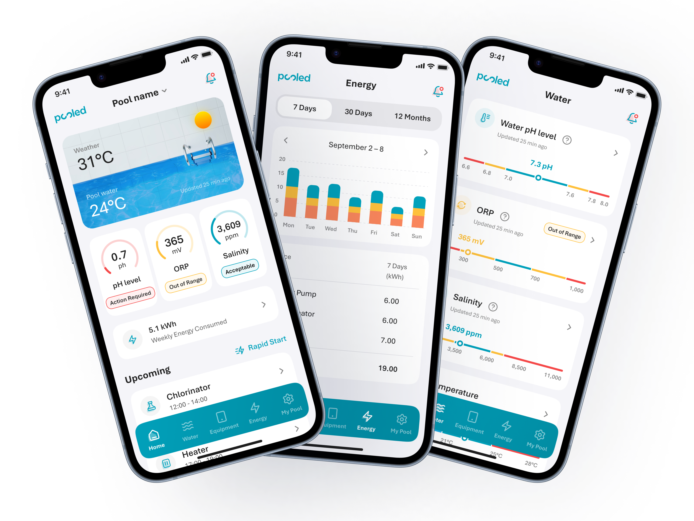
Pooled by Poolwerx is a smart pool management app for residential pool owners. It gives them real-time visibility into water chemistry, equipment status, and pool health, and lets them take action without picking up the phone.
The existing app was engineering-first, built for installers rather than owners, and had aged. Working with Evergen's engineering team, I led research, UX, and visual design across the full product: the consumer app, the scheduling and automation flows, and a fleet management dashboard for Poolwerx operators.
The design brief came down to a single user: a pool owner who opens the app on a Thursday, wants to know if the pool will be ready for the weekend, and shouldn't need to decode a technical dashboard to find out.
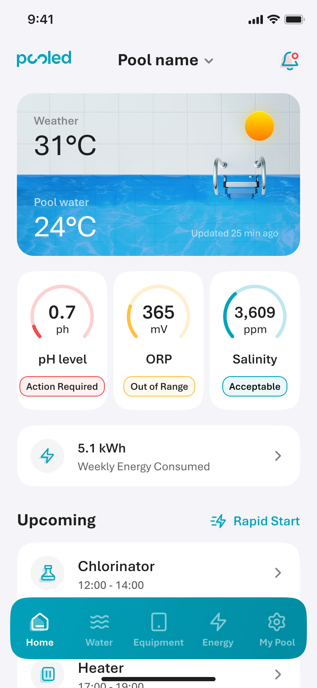
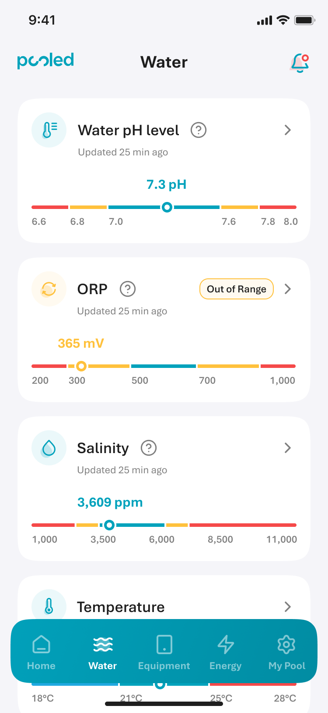
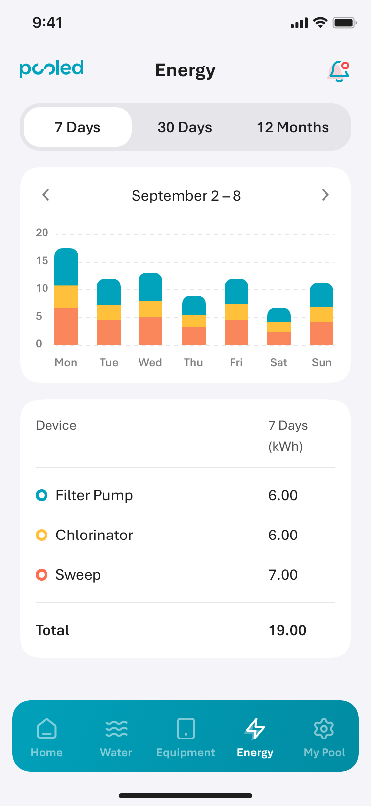
The home screen leads with status, not metrics. I designed a three-tier system to communicate pool health at a glance: Action Required (coral), Out of Range (orange), Acceptable (teal). Each reading on the home screen carries one of these states — the moment you open the app, you know whether your pool needs attention before you read a single number.
Green was deliberately left out of the palette. In a pool context, green signals algae growth — exactly the last thing an owner wants to see. The warm-to-cool colour system signals urgency without that association.
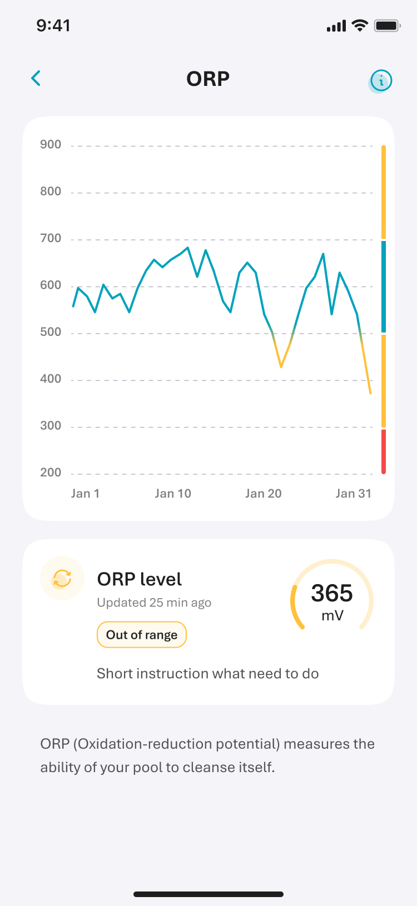
Pool chemistry isn't universal. What's an acceptable pH in one pool may be out of range for another, depending on equipment, pool size, water type, and local conditions. Rather than showing static thresholds, the Water tab uses coloured range bars to show where each reading sits within the tolerance band set for that specific pool.
This required the backend to surface per-pool tolerances rather than raw sensor values. More technically complex, but the right call. Telling a pool owner their pH is 7.2 means nothing without context. Showing them that 7.2 sits comfortably within their pool's acceptable range gives them the actual answer they came for.
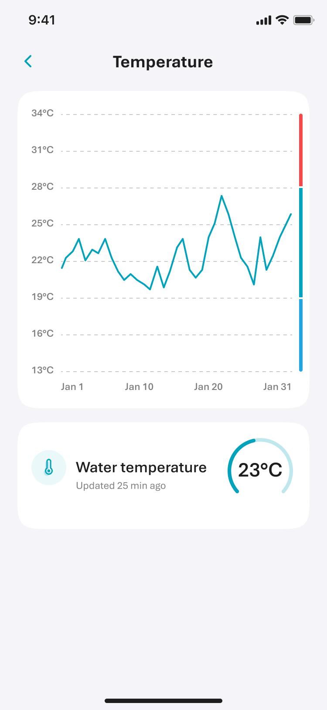
No two pools have the same setup. One might have a filter pump, chlorinator, and sweep; another adds a heater, heat pump, UV sanitiser, acid dosing system, or more. The Equipment tab was built to handle up to 12 different device types — presenting whatever combination existed in that pool clearly and consistently, with current schedule, status, and a quick way to act when needed.
That quick action was what the engineering team called "Start" — actually a specific feature: running a device immediately, outside its schedule, regardless of automation. Pool owners were already doing this instinctively. Renaming it Rapid Start wasn't inventing a concept; it was finally giving a clear name to something they'd always done. Each device surfaces its Rapid Start control alongside a timestamp — "Last Updated 25 min ago" — so users know how fresh the data is before acting on it.
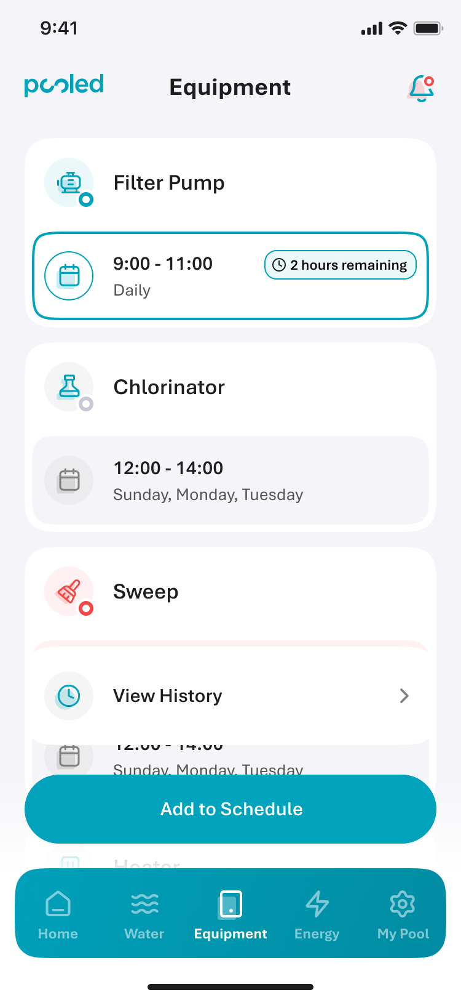
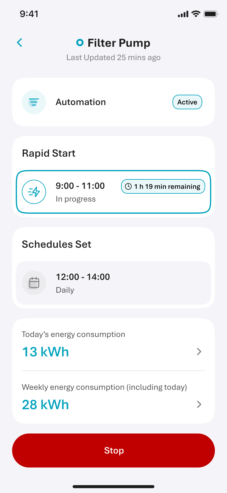
The original app had automation settings, but they were buried — most pool owners had no idea they could customise how their pool ran. I redesigned Automation Preferences as a dedicated screen with clear toggles and plain-language explanations for each option: when equipment runs during the day, whether to add a night-time chlorination burst, whether to account for a pool cover or rooftop solar. Pool owners could finally configure their pool around how they actually live, rather than leaving it on whatever the installer had set.
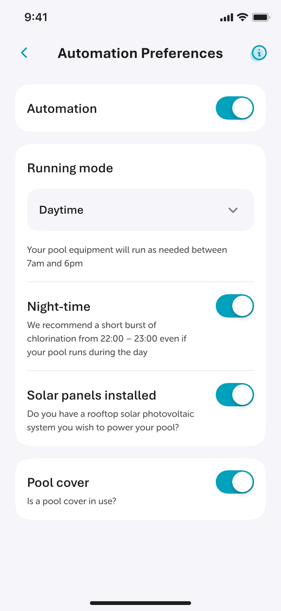
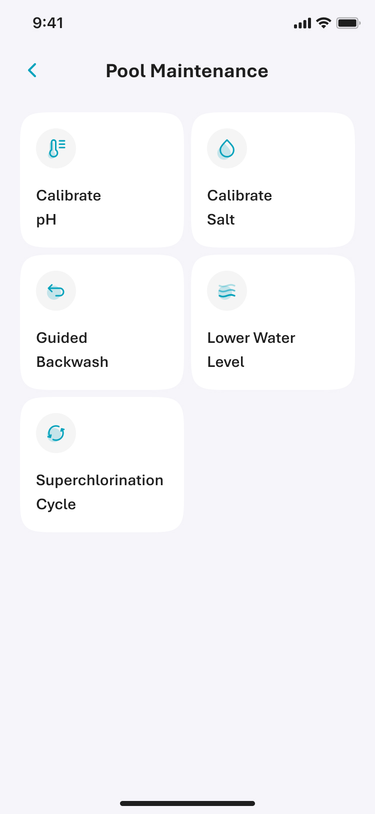
Alongside the consumer app, I designed a fleet management dashboard for Poolwerx's operations team. While pool owners see one pool, operators manage hundreds — tracking water chemistry across multiple sites, identifying pools that need attention, and reviewing chemical history for individual accounts.
The contrast between the two interfaces was deliberate. The consumer app leads with urgency and simplicity because pool owners check in quickly and want a fast answer. The operator dashboard leads with data density and overview because technicians need to triage across a fleet, not find a single yes-or-no status. The same principle applies: surface what matters first. It just looks different depending on who the user is.
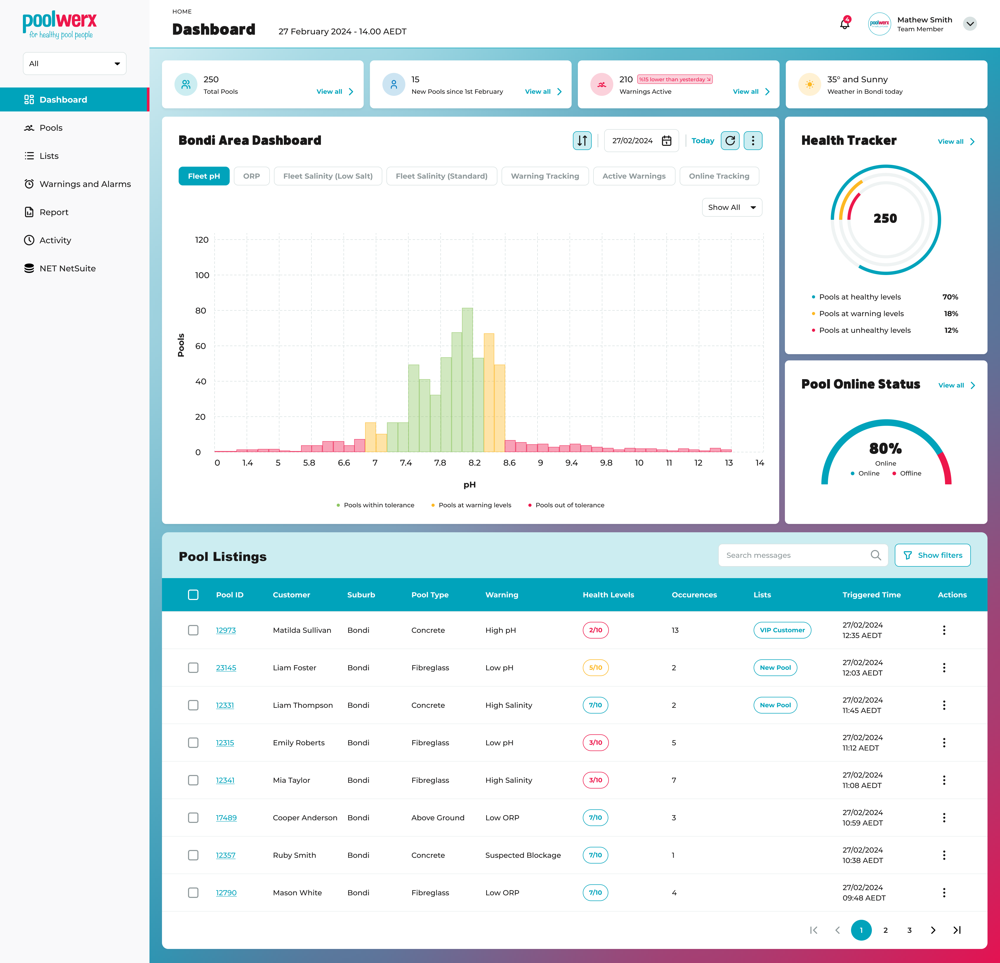
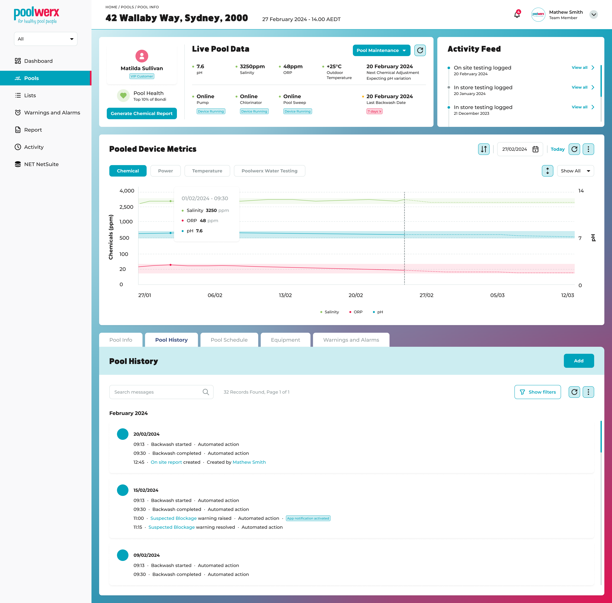
Pooled Gen 2 is now live across NSW, QLD, WA, VIC and ACT, backed by funding from the Australian Renewable Energy Agency (ARENA) through their Advancing Renewables Program. The product launched in partnership with Poolwerx and Intellihub, replacing the previous engineering-first app with a product built around the way pool owners actually think about their pool. Independent studies found households using the technology could achieve energy savings of up to 40%.